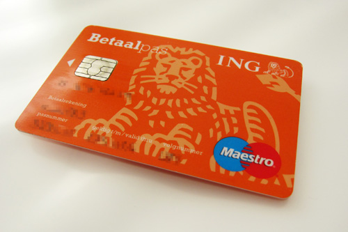

MUST DO
How to get started
Moving to a new country is always a challenge and if we count doing it with kids, it requires double the effort. For this reason, here is a list of the main steps you must deal with once you arrive in The Netherlands.
1. BSN (Citizen Service Number): it is a strictly personal number used by Dutch Government to exchange personal information with other government agencies.
- How/where to get it? You get it after you registered at the Municipality (Gemeente). The request takes from two weeks up to one month to be processed.
- What you need: Passport, International Birth Certificate both parents and kids, Marriage Certificate or other documents depending on your personal situation.
2. Bank Account: once you got your BSN, you can apply for a bank account which is necessary if you plan to stay long term. There are three major banks in the Netherlands: ING group, ABN Amro and Rabobank. The best bank for expats is ABN as it offers all its services in English, contrary to the other two banks.
3. Health Insurance: health insurance is compulsory for everyone who lives or works in the Netherlands. And it consists of:
- Monthly premium (Premie): fixed fee deducted from your bank account each month.
- “Own risk” (Eigen Risico): which is an annual amount you must pay yourself before the health insurance covers you. In 2017 the annual amount is up to 385 euros.
Kids don’t need a separate health insurance as the parent’s covers them until the age of 18 years old.
Dentist is not included and must be added separately in your health insurance.
To compare prices of different Dutch Health Insurance companies you can visit: Zorgwijzer (In English) or Independer.
